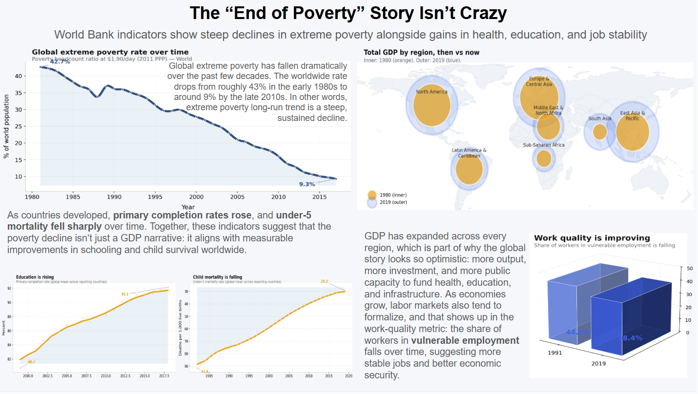
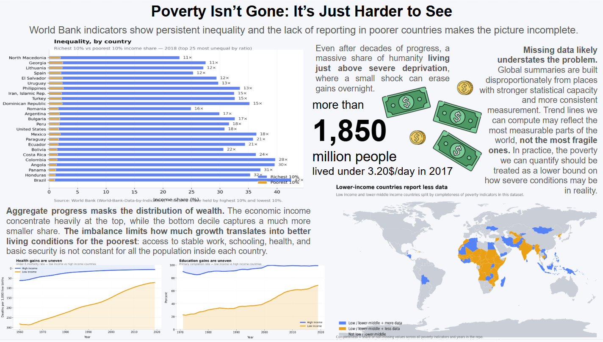

The “End of Poverty” Story Isn't Crazy
Position: supports the proposition that global poverty is basically being solved.

A reflection on how visual framing, aggregation, and omission shape the story told by data.
Position: supports the proposition that global poverty is basically being solved.

Position: supports the proposition that global poverty is basically being solved.
This is the most important design choice in the first dashboard because it establishes the entire argument before the viewer even looks at the supporting charts. The main line chart shows a real and substantial decline in the global extreme poverty rate over time, so placing it at the center and giving it the most visual prominence makes the dashboard immediately legible and persuasive. A long downward slope is one of the clearest and most intuitively powerful visual forms: even without reading the axis labels carefully, the viewer can instantly understand that something has improved. That immediacy matters because first impressions shape how the rest of the dashboard will be interpreted. Once the audience sees a strong, clean decline in the headline chart, they are more likely to read the surrounding charts as supporting evidence rather than as independent or potentially conflicting context.
Using a full-time series rather than a single “before vs. after” comparison also makes the argument feel more trustworthy. A before-and-after snapshot can look selective, as though I chose two convenient years to exaggerate progress, while a long-term trend suggests continuity, stability, and historical depth. It communicates that this is not a one-time fluctuation or short-lived improvement, but a durable global pattern. At the same time, this choice is still persuasive because it smooths the viewer's attention toward the overall direction of change rather than toward interruptions, regional variation, or debates about where the gains came from. In other words, the chart is highly earnest in the sense that it presents a real and meaningful trend, but it is also strategically powerful because it turns a complex global issue into one clear visual takeaway: poverty has been going down for decades, and that alone makes the proposition feel much more plausible.
This decision helps build a coherent story that global poverty is being solved by surrounding the main poverty chart with several indicators that all move in an optimistic direction. That makes the dashboard persuasive because it suggests broad-based improvement rather than a single isolated success. However, one subtle design choice in the GDP-by-region chart makes that progress feel more dramatic than the data alone would suggest. The 2019 circles have a thicker, darker blue outline, and are scaled to a higher value, while the 1980 circles are lighter, visually softer, and not scaled. Even if the underlying values are not changed, that contrast creates the impression that the outer circles are much larger, which pushes the viewer to read the change as more abrupt and substantial.
There is also an important omission in the data in general: the comparison across time is affected by differences in data coverage. The 1980 GDP aggregate is based on information from only about 43% of countries, while the 2019 aggregate covers around 86%. So the larger 2019 total does not only reflect real economic growth; it also reflects a more complete dataset. Because the chart does not disclose this directly, it encourages the audience to interpret the difference as purely developmental progress. That makes this design choice effective, but also somewhat deceptive, since it presents the comparison as more straightforward and comparable than it actually is.
The title, “The 'End of Poverty' Story Isn't Crazy,” is intentionally assertive and nudges the audience toward a sympathetic reading of the charts. The subtitle reinforces this by presenting the indicators as mutually supportive evidence of progress. This worked because titles strongly shape interpretation, though I know it is a mild framing device rather than a neutral description.
The structured layout helps the viewer move from the main poverty chart to the supporting evidence without confusion, which makes the overall argument easier to follow and more convincing. The muted blues and oranges also make the dashboard feel analytical rather than sensational, so the persuasion comes less from visual drama and more from an appearance of calm, data-driven credibility. This was intentional: I wanted the dashboard to look like a serious policy or research communication rather than an opinion piece.
The color choice also carries an additional layer of meaning. Blue echoes the visual identity of the World Bank, which is the source of much of the data, while orange references J-PAL, an institution strongly associated with poverty research and evidence-based development work. Because these colors are already linked to recognizable entities in the poverty-policy space, they give the dashboard a subtle sense of legitimacy and relevance. This is true in both dashboards. Even though the palette does not distort the data, it still influences interpretation by making the visuals feel more authoritative and professionally anchored in the field.
This is one of the most important persuasive choices in the dashboard because it makes progress appear broad, consistent, and widely shared. By relying on worldwide averages and broad regional comparisons, I present poverty reduction as a global story of improvement, even though aggregate gains can easily conceal how unevenly those gains are distributed. Averages flatten variation: they can make conditions look better overall while hiding the fact that many populations may still be excluded from that progress. I chose this approach because it makes the proposition easier to defend visually, but it also demonstrates how omission can function as a subtle form of deception.
This happens especially in the GDP-by-region chart. Dividing the world into regions gives the impression that the analysis is more detailed and that progress has been checked at a deeper level, which makes the argument seem more credible. However, those regions are still extremely large and internally diverse, so they do not actually show whether growth was broadly shared within countries or whether it was concentrated among specific places or groups. In that sense, the chart creates a feeling of nuance without fully providing it. It suggests that improvement is happening “everywhere,” when in reality, regional aggregation can still hide major internal inequality and uneven development.
Position: argues against the proposition that poverty is solved globally.

Position: argues against the proposition that poverty is solved globally.
Instead of disputing that some indicators improved, this dashboard changes the terms of the argument by asking who actually benefits from that improvement and who remains excluded from it. I intentionally tried to center the analysis on the groups most affected by poverty, rather than on people who are already economically secure. From the perspective of this proposition, the conditions of wealthier populations are not the most informative measure, because their stability does little to show whether poverty has truly been solved. What matters more is whether the people who are most vulnerable have experienced meaningful and widespread improvement. That shift in focus makes the rebuttal more persuasive because it exposes the weakness of the first narrative: aggregate progress is not the same thing as broad security or justice.
This worked especially well because the inequality bar chart and the reporting-completeness map make the counterargument feel structural rather than anecdotal. Instead of relying on isolated examples of hardship, the dashboard suggests that the problem lies in how progress is distributed and even in who gets counted in the first place. By foregrounding the populations that remain at risk, the visualization argues that the right question is not whether some people are doing better, but whether those most harmed by poverty are no longer living in precarious conditions. Framing the dashboard this way makes the analysis more ethically grounded, because it evaluates success from the standpoint of those for whom the issue is still urgent, rather than from the standpoint of those who were never truly at risk.
This big-number callout is persuasive because it transforms what could otherwise remain an abstract statistical discussion into something that feels human and morally difficult to ignore. A percentage can seem distant, especially when it represents a relatively small share of the global population, but an absolute number in the billions immediately reframes the issue. It reminds the viewer that even if poverty appears smaller when expressed proportionally, it still represents an enormous number of real people living with deprivation every day. The annotation, therefore, shifts the reader away from a detached, technical reading of the data and toward a more human interpretation of what the numbers actually imply.
I also reinforced this by showing the exact number of dollar bills and coins that make up $3.20, which helps translate the poverty threshold into something much more tangible and understandable. Rather than leaving “$3.20/day” as an abstract economic cutoff, this design choice makes the viewer picture how little money that actually is in everyday terms. Seeing the threshold broken down into a few physical units of currency makes the amount feel almost shockingly small, which strengthens the argument without changing the data itself. The dashboard does not directly say “this is an impossible amount to live on,” but by visualizing the actual money, it encourages the viewer to reach that conclusion on their own. In that sense, the annotation is persuasive not only because of the large population number, but also because it makes both parts of the claim, the number of people and the amount of money, feel immediate, concrete, and real.
The title, “Poverty Isn't Gone: It's Just Harder to See,” suggests that the real issue is invisibility rather than absence, which pushes readers to become suspicious of simple progress narratives. The annotation about missing data being a “lower bound” also encourages a more critical interpretation of the dataset. This framing is effective, but it is also more openly rhetorical than neutral reporting.
This is one of the most earnest choices in the dashboard because it refuses to treat missing data as a minor methodological inconvenience and instead presents it as part of the argument itself. In many visualizations, absent information is either ignored or pushed into a note at the bottom, which encourages the viewer to read the dataset as if it were a full and neutral picture of reality. Here, I wanted to make the opposite point: the places that are hardest to measure are often also the places where poverty and institutional vulnerability may be most severe. By mapping where reporting is incomplete, the dashboard asks the viewer to think not only about what the data says, but also about what the data cannot confidently capture.
The global dataset may be systematically more complete for places that are easier to monitor and govern, while being thinner exactly where deprivation may be hardest to quantify. In other words, the problem is not simply that some values are missing; it is that the missingness itself may distort the overall story by making the world look more knowable, and potentially less unequal, than it really is. Highlighting that geography turns uncertainty into a substantive finding rather than a disclaimer.
This design choice also makes the dashboard more ethical because it resists the temptation to overclaim. Instead of presenting the available numbers as the whole truth, it openly acknowledges that any optimistic conclusion about poverty reduction is limited by who gets counted and who does not. That transparency strengthens the counterargument: if large parts of the world are underreported, then the apparent scale of improvement should be interpreted more cautiously. In that sense, the map does not just say “the data is incomplete”; it suggests that the available evidence may function as a lower bound, meaning reality could be worse than the charts imply. Making that visible is both analytically honest and rhetorically powerful, because it challenges the viewer to see uncertainty not as space, but as part of the story of global poverty itself.
This choice makes uneven progress visible in a way that global averages cannot. Even when both high-income and low-income groups show improvement over time, the persistent distance between them still matters. That visual gap supports the claim that poverty has not been “solved” in any meaningful universal sense, because aggregate improvement does not erase the fact that access to health and education remains deeply unequal across the world. I chose this approach instead of another global summary because disparity, not just average progress, is central to the counterargument.
These charts also intentionally place more emphasis on the conditions of lower-income countries than on the continued success of wealthier ones. The key analytical question is not whether already-advantaged countries are doing well, but whether the populations most vulnerable to poverty are catching up in a meaningful way. If high-income countries continue to perform strongly, that is not especially surprising; what matters more is that low-income countries still face significantly worse outcomes, even after decades of global development.
Designing these two dashboards made it clear to me that persuasive visualization is not just about changing colors or writing a stronger title; it is about deciding what counts as the story. The most straightforward part was finding evidence for the optimistic dashboard, because aggregate global indicators really do show major long-run improvements in extreme poverty, health, education, and employment. The harder part was realizing that the opposing dashboard did not need to prove those trends false. Instead, it could reframe the question by focusing on inequality, fragility, and data absence. What surprised me most was how easy it was to make both arguments feel convincing using the same broad dataset. The biggest difference was not the raw numbers themselves, but the level of aggregation, the surrounding context, and what I chose to foreground or leave in the background.
This topic also feels personal to me. I come from one of the countries represented on the poorer side of the inequality charts, so I have not experienced poverty and inequality only as abstract numbers on a graph. I have seen firsthand how different life can look depending on where you are born, what resources surround you, and how invisible hardship can become to people who have never had to live with it. Because of that, I get especially frustrated when wealthy people use broad global progress to suggest that everything is fine now, or that poverty is basically solved. Aggregate improvement matters, but it does not erase the reality that millions of people still live in deeply precarious conditions. That personal experience is part of why I care so much about economics: I want to understand these systems seriously enough that one day I can help write policy that does not just celebrate growth at the top, but actually helps poor and ultra-poor communities get out of that hole.
This assignment changed how I think about ethical analysis and visualization. I do not think ethical visualization means removing persuasion altogether, because every chart already reflects choices about framing, scale, comparison, and emphasis. Instead, ethical practice depends on whether those choices help viewers understand the limits and implications of the data, or whether they quietly steer viewers toward conclusions that the data cannot fully support. For me, acceptable persuasion includes emphasis, narrative structure, and interpretive framing, as long as the underlying evidence remains legible and the omissions do not fundamentally distort the claim. It becomes misleading when a visualization uses true facts to imply something broader, cleaner, or more certain than the data really shows. Working on these two dashboards made that boundary feel less like a hard line and more like a spectrum of responsibility.